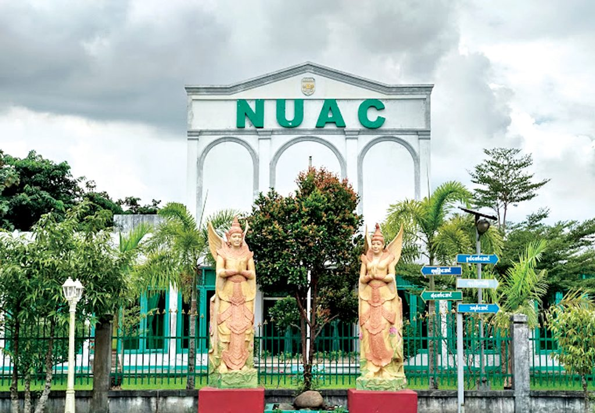

About the University
အမျိုးသားယဉ်ကျေးမှုနှင့် အနုပညာတက္ကသိုလ် (NUAC) သည် မြန်မာနိုင်ငံ၏ ဓလေ့ထုံးစံများ၊ ရိုးရာကလာပ်ဆက်မှုများနှင့် အနုပညာပညာရပ်များကို ထိန်းသိမ်းမြှင့်တင်ရန် ရည်ရွယ်ဖွင့်လှစ်ထားသော နိုင်ငံ့ပထမဦးဆုံးသော အများပိုင်အနုပညာတက္ကသိုလ်ဖြစ်သည်။ ၁၉၉၃ ခုနှစ်တွင် ရန်ကုန်တွင် ယဉ်ကျေးမှုတက္ကသိုလ်အဖြစ် တည်ထောင်ခဲ့ပြီး ၂၀၀၇ ခုနှစ်တွင် National University of Arts and Culture အဖြစ် အမည်ပြောင်းခဲ့ပါသည်။
NUAC operates two campuses — Yangon (est. 1993) and Mandalay (est. 2001) — both dedicated to training outstanding artists in traditional performing and visual arts. The university's motto, "Mind when tamed is conducive to happiness," reflects its commitment to discipline, creativity, and cultural service.
Taught primarily in English (except Burmese Literature), NUAC welcomes both local and foreign students, with special programs for international students interested in Burmese dance, sculpture, and traditional musical instruments. In 2024, both campuses launched new Master's degree programs, marking a major milestone in postgraduate arts education in Myanmar.
Why Choose NUAC?
Myanmar's Premier Arts University
The only public university in Myanmar dedicated exclusively to arts, culture, music, drama, painting, and sculpture.
Open to Foreign Students
International students are welcomed for degree programs and research, with English as the primary medium of instruction.
Notable Alumni
Home to Myanmar Academy Award winners, Miss Universe Myanmar 2017, and celebrated models, singers, and actresses.
Two Strategic Campuses
Campuses in Yangon (52 acres) and Mandalay (41.35 acres) serve students across Myanmar's two largest cities.
Campus Gallery

🌸

🌸

🌸

🌸

🌸

🌸
Available Programs
Explore arts and culture programs across both campuses
📍 Yangon Campus Programs
Bachelor of Arts — Yangon
BA (4 Years) / BA Honours (5 Years)Comprehensive bachelor's programs in Myanmar's traditional and contemporary arts disciplines. Annual intake of 50 students per major.
Undergraduate Diploma in Computer Arts
Diploma — Yangon OnlyA specialized diploma blending traditional arts education with digital and computer arts, available exclusively at the Yangon campus.
Post-Graduate Diplomas — Yangon
PGD (1 Year)One-year postgraduate diploma programs for graduates seeking advanced specialization. Also includes unique heritage disciplines not offered at undergraduate level.
Master's Degrees — Yangon
MA (2 Years) — Launched 2024Newly launched in 2024–25, these Master's programs represent a landmark expansion of postgraduate arts education in Myanmar.
📍 Mandalay Campus Programs
Bachelor of Arts — Mandalay
BA (3 Years) / BA Honours (4 Years)Bachelor's programs in core arts disciplines with an annual intake of 200 students. Mandalay graduates may transfer to Yangon campus for postgraduate study.
Master's Degrees — Mandalay
MA (2 Years) — Launched 2024Mandalay campus launched its own Master's degree programs in 2024–25, including the unique MA Acting & Theatre not offered at Yangon.
Compulsory Subjects (Both Campuses)
All students at both campuses study the following compulsory subjects:
Historical Timeline
Over 30 years of arts and culture education in Myanmar
University of Culture, Yangon — Established
Founded on 24 September 1993, the University of Culture opened its doors in Yangon as Myanmar's first dedicated arts and culture institution under the Ministry of Religious Affairs and Culture.
Yangon Campus Relocated to South Dagon Myothit
The Yangon campus was relocated to its current site on Aung Zeya Road, 26th Ward, South Dagon Myothit — a 52-acre (210,000 m²) campus that remains its home today.
Rector System Introduced
The university's leadership structure was upgraded from a Principal-led model to a Rector system, reflecting its growing status as a full university institution.
University of Culture, Mandalay — Opened
A second campus opened on 5 November 2001 in Patheingyi Township, Mandalay — on a 41.35-acre site — extending arts education to Upper Myanmar.
Post-Graduate Diploma Programs Introduced
One-year postgraduate diploma programs were launched at the Yangon campus, covering all major arts disciplines plus Applied Archaeology and Museology.
Renamed — National University of Arts and Culture (NUAC)
By Cabinet Approval 40/2007, both campuses were officially renamed to National University of Arts and Culture, recognizing the institution's national role in preserving Myanmar's cultural heritage.
Master's Degree Programs Launched at Both Campuses
A landmark year for NUAC — both the Yangon and Mandalay campuses launched two-year Master's degree programs for the 2024–25 academic year, elevating postgraduate arts education across Myanmar.
Campus Life at NUAC
အနုပညာနှင့် ယဉ်ကျေးမှု — Life at Myanmar's premier arts university

Yangon Campus (52 Acres)
Located in South Dagon Myothit, the Yangon campus offers spacious studios, performance halls, and art galleries across 52 acres — a creative hub in the city.

Mandalay Campus (41.35 Acres)
Nestled in Patheingyi Township, the Mandalay campus spans 41.35 acres with 232 academic staff, 149 administrative staff, and approximately 800 students.

Cultural Performances & Events
Students regularly participate in national cultural exhibitions, public performances, and international arts exchanges that bring Myanmar's heritage to the world stage.
Notable Alumni
"NUAC shaped my musical identity and gave me the foundation to win the Myanmar Academy Award for Best Music."
"The arts education I received at NUAC helped me represent Myanmar with confidence and grace on the world stage."
✅ Mission & Objectives
- Preserve and disseminate Myanmar's cultural heritage
- Train outstanding artists in traditional performing and visual arts
- Teach traditional culture and customs of indigenous national races
- Uphold nationalism and patriotism
- Nurture artists with high morality and nobility
- Conduct research in Burmese arts and culture
Career Opportunities
Where can you go after NUAC?
Professional Musician
Perform traditional and contemporary Myanmar music at national events, festivals, cultural shows, and international arts exchanges.
Performing arts industryActor / Performer
Build a career in Myanmar's film, television, and theatre industry — following in the footsteps of celebrated NUAC alumni.
Film, TV & TheatreVisual Artist / Painter
Create and exhibit original artwork in galleries, cultural institutions, and international art fairs representing Myanmar's visual arts tradition.
Arts & exhibitionsArchaeologist / Curator
Work with national museums, UNESCO, or government bodies to preserve and interpret Myanmar's rich archaeological and cultural heritage.
Government & heritage sectorFilmmaker / Cinematographer
Direct, produce, or work behind the camera in Myanmar's growing film and media industry, with skills in cinematography and dramatic arts.
Film & media industryArts Educator
Teach music, drama, painting, or sculpture at schools, universities, and cultural institutes — passing Myanmar's artistic traditions to the next generation.
Education sector